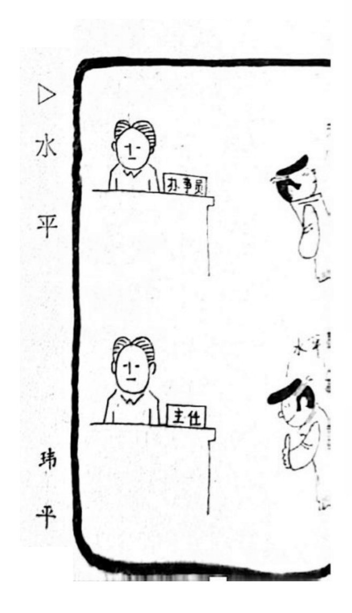

玮平 《人事》1985年第3期（总第3期），第44页
水平
Level
- Text in the drawing
- 办事员 / 主任 / 水平（？）
Clerk / Director / Level (?) - Description
- Two panels: a visitor approaches the same placid face behind a counter, first labeled “clerk,” then “director” — and the second time he bows low. The right half of each panel is cut off in the scan.
- Note
- 水平, “level,” means both competence and rank. The point seems to be that the visitor judges the man by his title, not his ability — the face is the same in both panels. Half the drawing is missing, so this reading is tentative.
- Artist
- Wei Ping 玮平
- Published in
- 《人事》1985年第3期（总第3期）, p. 44
- Themes
- Bureaucratism · Seniority

Cite
Wei Ping, “水平” [Level], Renshi (Personnel) 《人事》, 1985, no. 3, p. 44.